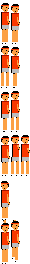
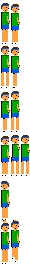
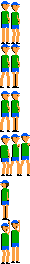

Era 2 (NES) players: pixellab (old) against tools/spritegen.mjs (new). Rows: idle, up, down, swing, miss, win
left, the player
OLD pixellab, game scale
NEW spritegen, game scale
OLD, 4x
NEW, 4x
right, the computer (the rig mirrors him)
OLD pixellab, game scale
NEW spritegen, game scale
OLD, 4x
NEW, 4x
left, the player: old era2-sheet-left -- faults 5, 6 colours, 12 of 12 frames different (5 over the NES line budget)
left, the player: new era2-boy -- faults 0, 5 colours, 12 of 12 frames different
right, the computer (the rig mirrors him): old era2-sheet-right -- faults 7, 7 colours, 12 of 12 frames different (7 over the NES line budget)
right, the computer (the rig mirrors him): new era2-rival -- faults 0, 6 colours, 12 of 12 frames different